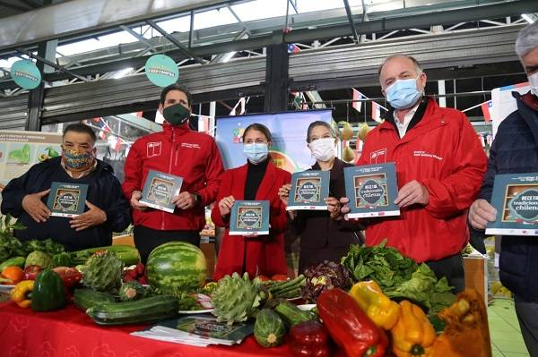
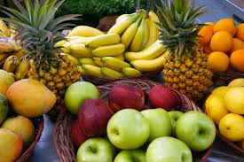

BLOG DE HUERTOHOGAR: Vida Saludable y Conciencia Ambiental
El Impacto Positivo de Elegir Productos de Temporada
Descubre cómo tu elección de frutas y verduras frescas y de temporada reduce la huella de carbono y apoya la economía de los agricultores locales. ¡Comer sano es cuidar el planeta!
Leer artículo completo

3 Recetas Rápidas y Saludables con Espinacas y Quinua
Aprende a incorporar súper alimentos como las espinacas y la quinua orgánica en tus comidas diarias. Te mostramos trucos sencillos para conservar la frescura de tus vegetales por más tiempo.
Ver recetas y tips
